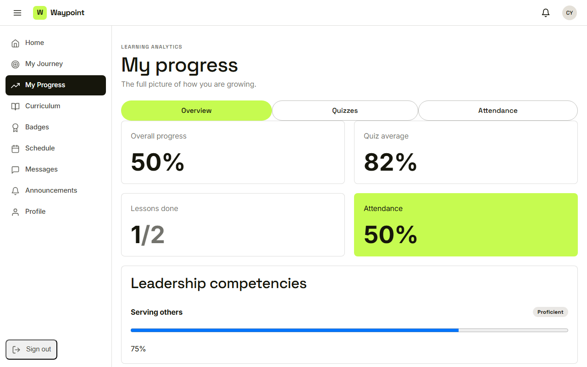
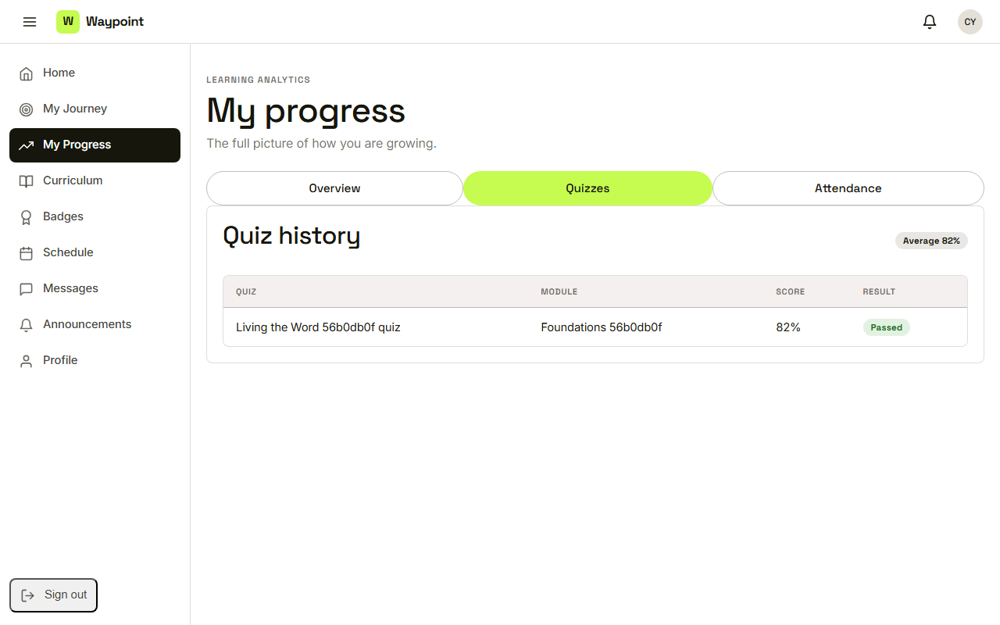
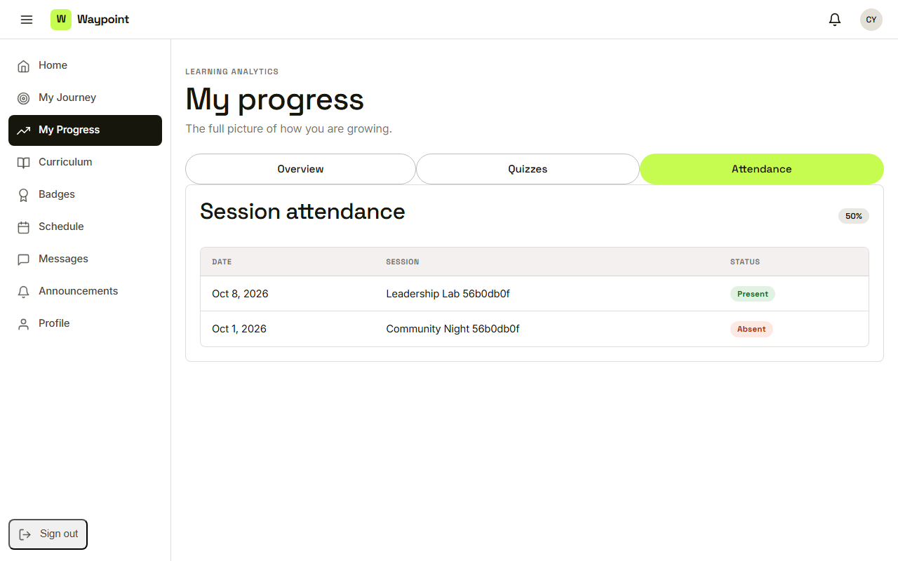

Waypoint · Video 035
Reviewing your own progress
Your numbers, in one place
Four numbers

Overall progress, quiz average, lessons done, attendance
Levels from the mentor
Serving others: proficient, 75%
Quiz history

Score and result for each quiz
Session attendance

Present or absent, session by session
Things to remember
Overview, Quizzes and Attendance tabs
Competency levels come from the mentor
Quiz history shows the scores that count
It is her own data, in one place